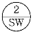

전산응용건축제도기능사 (2010-01-31 기출문제)
1과목: 건축구조
1. 철근콘크리트 단순보의 철근에 관한 설명 중 옳지 않은 것은?
- 인장력에 저항하는 재축방향의 철근을 보의 주근이라 한다.
- 중요한 보로서 압축측에도 철근을 배근한 것을 단근보라 한다.
- 전단력을 보강하여 보의 주근 중위에 둘러감은 철근을 늑근이라 한다.
- 늑근은 단부에서는 촘촘하게 중앙부에서는 성기게 배치하는 것이 원칙이다.
(정답률: 50%)

2. 휨모멘트나 전단력을 견디게 하기 위해 사용되는 것으로 보의 단부의 단면을 중앙부의 단면보다 크게 한 부분은?
- 헌치
- 슬래브
- 래티스
- 지붕보
(정답률: 70%)
3. 철골 구조에 대한 설명으로 옳지 않은 것은?
- 구조체의 자중이 내력에 비해 작다.
- 강재는 인성이 커서 상당한 변위에도 견디어 낼 수 있다.
- 열에 강하고 고온에서 강도가 증가한다.
- 단면에 비해 부재가 세장하므로 좌굴하기 쉽다
(정답률: 72%)
4. 철근콘크리트구조에 사용되는 철근에 관한 설명 중 옳지 않은 것은?
- 인장력이 약한 부분에 철근을 배근한다.
- 철근의 합산한 총 단면적이 같을 때 가는 철근을 사용하는 것이 부착력 향상에 좋다.
- 철근과 콘크리트 부착강도는 콘크리트의 강도만으로 결정된다.
- 철근의 이음은 인장력이 작은 곳에서 한다.
(정답률: 74%)
5. 재질이 가볍고 투명성이 좋아 채광을 필요로 하는 대공간 지붕 구조로 가장 적합한 것은?
- 막구조
- 셸구조
- 절판구조
- 케이블구조
(정답률: 69%)
6. 부재에 하중이 작용하면 각 부재의 내부에는 외력에 저항하는 힘인 응력이 생기는데, 다음 중 부재를 직각으로 자를 때에 생기는 것은?
- 인장응력
- 압축응력
- 전단응력
- 휨모멘트
(정답률: 76%)
7. 자중도 지지하기 어려운 평면체를 아코디언과 같이 주름을 잡아 지지하중을 증가시킨 구조형태는?
- 절판구조
- 셸구조
- 돔구조
- 입체트러스
(정답률: 69%)
8. 반원 아치의 중앙에 들어가는 돌의 이름은?
- 쌤돌
- 고막이돌
- 두겁돌
- 이맛돌
(정답률: 73%)
9. 철근콘크리트구조의 형식 중 층고 문제를 해결하기 위해 주상복합이나 지하 주차장 등에 사용되는 것은?
- 벨트트러스구조
- 다이아그리드구조
- 막구조
- 플랫슬래브구조
(정답률: 70%)
10. 다음 중 고력볼트의 접합 원리에 해당하는 것은?
- 휨모멘트
- 압축력
- 전단력
- 마찰력
(정답률: 60%)
11. 다음 중 철근콘크리트 구조에서 거푸집이 갖추어야 할 조건으로 가장 거리가 먼 것은?
- 콘크리트를 부어 넣었을 때 변형되거나 파괴되지 않을 것
- 반복 사용할 수 없을 것
- 운반과 가공이 쉬울 것
- 시멘트 페이스트가 누출되지 않을 것
(정답률: 82%)
12. 블록구조에 대한 설명 중 옳지 않은 것은?
- 블록 장막벽은 라멘 구조에서 내부 칸막이로 사용하는 비내력벽 구조이다.
- 창쌤용 블록은 창문틀의 하부에 설치하며 물끊기 홈이 설치되어 있다.
- 보강블록조는 블록의 빈 속에 철근과 콘크리트를 부어 넣어 보강한 것이다.
- 창대용 블록은 문틀이 맞추어지고 물흘림, 물끊기가 달린 것이다.
(정답률: 52%)
13. 조적 구조에 대한 설명으로 옳지 않은 것은?
- 수평력에 약하다.
- 내력벽의 두께는 바로 위층의 내력벽 두께 이상이어야 한다.
- 인방보는 출입구 하단에 설치하는 것이 유리하다.
- 내력벽 상단에 테두리보를 설치하는 것이 유리하다.
(정답률: 57%)
14. 목구조의 특징에 관한 설명 중 옳지 않은 것은?
- 부재의 함수율에 따른 변형이 크다.
- 부패 및 충해가 크다.
- 열전도율이 크다.
- 고층건물에 부적당하다.
(정답률: 79%)
15. 인접건물의 화재에 의해 연소되지 않도록 하는 구조는?
- 흡음벽
- 보온벽
- 방습벽
- 방화벽
(정답률: 91%)
16. 재료가 인장되거나 압축될 때, 세로변형도와 가로 변형도와의 관계를 무엇이라 하는가?
- 푸아송의 비
- 영계수
- 응력도
- 탄성계수
(정답률: 79%)
17. 다음 중 기둥과 보가 없이 평면적인 구조체만으로 구성된 구조시스템은?
- 막구조
- 셸구조
- 벽식구조
- 현수구조
(정답률: 60%)
18. 채광만을 목적으로 하고 환기를 할 수 없는 밀폐된 창은?
- 미서기창
- 오르내리창
- 붙박이창
- 미닫이창
(정답률: 87%)
19. 벽돌벽 쌓기에서 표준형 벽돌을 사용해서 1.5B 쌓기할 때 벽두께는?
- 270 ㎜
- 290 ㎜
- 320 ㎜
- 390 ㎜
(정답률: 86%)
20. 절충식 지붕틀에서 동자기둥이 받는 부재는?
- 중도리와 마루대
- 서까래와 벼개보
- 대공과 지붕보
- 깔도리와 처마도리
(정답률: 36%)
2과목: 건축재료
21. 복층 유리에 대한 설명 중 옳지 않은 것은?
- 방음효과가 있다.
- 단열효과가 크다.
- 결로방지용으로 우수하다.
- 유리사이에 합성수지 접착제를 채워 제작한 것이다.
(정답률: 69%)
22. 소석회에 모래, 해초풀, 여물 등을 혼합하여 바르는 미장재료로서 목조바탕, 콘크리트 블록 및 벽돌 바탕에 사용되는 것은?
- 돌로마이트 플라스터
- 회반죽
- 석고 플라스터
- 시멘트 모르타르
(정답률: 59%)
23. 목재의 벌목 시기로 겨울철이 가장 좋은 이유는?
- 목질이 연약하여 베어내기 쉽기 때문
- 사람의 왕래가 적기 때문
- 수액이 적어 건조가 빠르기 때문
- 옹이가 적기 때문
(정답률: 82%)
24. 공사현장 등의 사용 장소에서 필요에 따라 만드는 콘크리트가 아니고, 주문에 의해 공장생산 또는 믹싱카로 제조하여 사용현장에 공급하는 콘크리트는?
- 레디믹스트 콘크리트
- 프리스트레스트 콘크리트
- 한중 콘크리트
- AE 콘크리트
(정답률: 75%)
25. 다음 중 소성 온도가 가장 높은 것은?
- 토기
- 석기
- 자기
- 도기
(정답률: 77%)
26. 다음 건축재료와 원료와의 관계가 적절하지 않은 것은?
- 유리 - 규사
- 시멘트 - 석회석
- 테라코타 - 점토
- 테라조 - 마그네시아 석회
(정답률: 63%)
27. 콘크리트 내부에 미세한 독립된 기포를 발생시켜 콘크리트의 작업성 및 동결융해 저항성능을 향상시키기 위해 사용되는 화학혼화제는?
- 응결, 경화조정제
- 방청제
- 기포제
- AE제
(정답률: 70%)
28. 다음의 건축물의 용도와 바닥 재료의 연결 중 적합하지 않은 것은?
- 유치원의 교실 - 인조석 물갈기
- 아파트의 거실 - 플로어일 블록
- 병원의 수술실 - 전도성 타일
- 사무소 건물의 로비 - 대리석
(정답률: 75%)
29. 건축물의 내구성에 영향을 주는 인자에 해당하지 않는 것은?
- 바람
- 지진
- 화재
- 광택
(정답률: 89%)
30. 동에 대한 설명으로 옳은 것은?
- 전·연성이 크다.
- 열전도율이 작다.
- 건조한 공기 중에서도 산화된다.
- 산, 알칼리에 강하다.
(정답률: 51%)
31. 석회석이 변화되어 결정화한 것으로 석질이 치밀하고 견고할 뿐 아니라 외관이 미려하여 실내 장식재 또는 조각재로 사용되는 석재는?
- 점판암
- 사문암
- 대리석
- 안산암
(정답률: 86%)
32. 다음 중 콘크리트의 장점에 해당하지 않는 것은?
- 인장강도가 크다.
- 내화적이다.
- 내구적이다.
- 방청력이 크다.
(정답률: 59%)
33. 점토에 대한 다음 설명 중 옳지 않은 것은?
- 제품의 색깔과 관계있는 것은 규산성분이다.
- 점토의 주성분은 실리카, 알루미나이다.
- 각종 암석이 풍화, 분해되어 만들어진 가는 입자로 이루어져 있다.
- 점토를 구성하고 있는 점토광물은 잔류점토와 침적점토로 구분된다.
(정답률: 51%)
34. 실(seal)재에 대한 설명으로 옳지 않은 것은?
- 실(seal)재란 퍼티, 코킹, 실링재, 실런트 등의 총칭이다.
- 건축물의 프리패브 공법, 커튼월 공법 등의 공장 생산화가 추진되면서 더욱 주목받기 시작한 재료이다.
- 일반적으로 수밀, 기밀성이 풍부하지만, 접착력이 가장 작아 창호, 조인트의 충전재로서는 부적합하다
- 옥외에는 태양광선이나 풍우의 영향을 받아도 소기의 기능을 유지할 수 있어야 한다.
(정답률: 67%)
35. 물의 밀도가 1g/㎤ 이고 어느 물체의 밀도가 1kg/㎥라 하면 비중은 얼마인가?
- 1
- 1000
- 0.001
- 0.1
(정답률: 74%)
36. 급경성으로 내알칼리성 등의 내화학성이나 접착력이 크고 금속, 석재 도자기, 글라스, 콘크리트플라스틱재의 접착에 모두 사용되는 합성수지 접착제는?
- 에폭시수지 접착제
- 요소수지 접착제
- 페놀수지 접착제
- 멜라민수지 접착제
(정답률: 55%)
37. 시멘트 저장시 유의해야 할 사항을 설명한 내용으로 옳지 않은 것은?
- 시멘트는 지상 30cm 이상 되는 마루 위에 적재하는 것이 좋다.
- 시멘트는 방습적인 구조로 된 창고에 품종별로 구분하여 저장하여야 한다.
- 3개월 이상 저장한 시멘트는 사용 전에 재시험을 실시해야 한다.
- 시멘트를 쌓아올리는 높이는 7포대를 넘지 않도록 해야 한다.
(정답률: 67%)
38. 다음 중 코르코판(cork board)의 사용 용도로 옳지 않은 것은?
- 방송실의 흡음재
- 제빙 공장의 단열재
- 전산실의 바닥재
- 내화 건물의 불연재
(정답률: 70%)
39. 콘크리트, 모르타르 바탕에 아스팔트 방수층 또는 아스팔트 타일 붙이기 시공을 할 때의 초벌용 재료를 무엇이라 하는가?
- 아스팔트 프라이머
- 아스팔트 컴파운드
- 블로운 아스팔트
- 아스팔트 루핑
(정답률: 74%)
40. 각종 시멘트의 특성에 관한 설명 중 옳지 않은 것은?
- 중용열포틀랜드시멘트에 의한 콘크리트는 수화열이 작다.
- 실리카시멘트에 의한 콘크리트는 초기강도가 크고 장기강도가 낮다.
- 조강포틀랜트시멘트에 의한 콘크리트는 내해수성이 크다.
- 플라이애쉬시멘트에 의한 콘크리트는 내해수성이 크다.
(정답률: 48%)
3과목: 건축계획 및 제도
41. 다음 중 건축법상 용어의 정의가 옳지 않은 것은?
- 건축이란 건축물을 신축, 증축, 재축, 개축하거나 건물을 이전하는 것을 말한다.
- 대수선이란 건축물의 기둥, 보, 주계단, 장막벽의 구조 또는 외부형태를 수선하는 것을 말한다.
- 리모델링이란 건축물의 노후화를 억제하거나 기능 향상 등을 위하여 대수선하거나 일부 증축하는 행위를 말한다.
- 거실이란 건축물 안에서 거주, 집무, 작업, 집회, 오락, 그 밖에 이와 유사한 목적을 위하여 사용되는 방을 말한다.
(정답률: 50%)
42. 단면도에 표시할 사항과 가장 거리가 먼 것은?
- 건축물의 높이, 층높이
- 처마높이, 창높이
- 난간높이
- 지붕의 물매, 창의 개폐법
(정답률: 70%)
43. 투상도의 종류 중 X, Y, Z의 기본 축이 120°씩 화면으로 나누어 표시되는 것은?
- 등각 투상도
- 이등각 투상도
- 부등각 투상도
- 유각 투상도
(정답률: 77%)
44. 주거 단지의 단위 중 초등학교를 중심으로 한 단위는?
- 근린 지구
- 인보구
- 근린 분구
- 근린 주구
(정답률: 69%)
45. 다음 중 주택 출입구에서 현관의 바닥면과 실내바닥면의 높이차로 가장 알맞은 것은?
- 5cm
- 15cm
- 30cm
- 45cm
(정답률: 77%)
46. 수송설비인 컨베이어 벨트 중 수평용으로 사용되며 기물을 굴려 운반하는 것은?
- 버킷 컨베이어
- 체인 컨베이어
- 롤러 컨베이어
- 에이프린 컨베이어
(정답률: 74%)
47. 다음 중 건축계획의 과정에서 계획 조건의 설정시 고려하여야 할 사항과 가장 거리가 먼 것은?
- 건축의 용도
- 건축주의 요구
- 규모 및 예산
- 구조 계획
(정답률: 60%)
48. 실내공간을 형성하는 주요 기본구성요소 중 천장과 함께 공간을 구성하는 수평적 요소로서 생활을 지탱하는 역할을 하는 것은?
- 벽
- 보
- 기초
- 바닥
(정답률: 62%)
49. 부엌 작업대의 배치 유형 중 양 벽면에 인접한 작업대를 붙여서 배치한 형태로 여유 공간에 식탁을 배치하여 식당겸 부엌으로 사용하는 경우에 적합한 것은?
- 일렬형
- 병렬형
- ㄱ자형
- ㄷ자형
(정답률: 45%)
50. 다음 중 주택의 입면도 그리기 순서에서 가장 먼저 이루어져야 할 사항은?
- 처마선을 그린다.
- 지반선을 그린다.
- 개구부 높이를 그린다.
- 재료의 마감 표시를 한다.
(정답률: 84%)
51. 제도 용구에 관한 설명 중 옳은 것은?
- T자는 단독으로 평행선, 수직선, 사선을 긋는다.
- 선을 그릴 때 T자 머리를 제도판에서 약간 띄운다.
- T자로 수평선을 그을 때는 오른쪽에서 왼쪽으로 긋는다.
- 삼각자 1개 또는 2개를 가지고 여러 가지 위치를 바꾸면 여러 가지 각도의 선을 그을 수 있다.
(정답률: 62%)
52. 자동화재 탐지설비의 감지기 중 열감지에 해당하지 않는 것은?
- 광전식
- 차동식
- 정온식
- 보상식
(정답률: 67%)
53. 높이에 의한 수압 차이로 급수하는 방식으로 항상 일정한 수압을 유지하며 대규모 급수설비에 적합한 급수 방식은?
- 부스터 방식
- 압력 탱크 방식
- 고가 탱크 방식
- 수도 직결 방식
(정답률: 58%)
54. 실내 공기오염도의 척도로 주로 이용되는 것은?
- 공기 중의 산소 농도
- 공기 중의 아황산가스 농도
- 공기 중의 이산화탄소 농도
- 공기 중의 질소 농도
(정답률: 88%)
55. 다음의 창호기호 표시가 의미하는 것은?

- 철재창
- 알루미늄문
- 목재창
- 플라스틱문
(정답률: 80%)
56. 다음 중 지붕 경사의 표시로 가장 알맞은 것은?
- 4/10
- 4/100
- 4/50
- 2/100
(정답률: 74%)
57. 자연환기에 대한 설명 중 옳지 않은 것은?
- 개구부를 통해 급기와 배기가 이루어진다.
- 일정한 환기량을 유지할 수 있다.
- 풍향, 풍속 및 실내외의 온도차와 공기 밀도차에 의한 방법이다.
- 온도차에 의한 자연 화기는 중력 환기라고도 한다.
(정답률: 64%)
58. 한식주택과 양식주택에 대한 설명 중 옳지 않은 것은?
- 한식주택은 좌식이고, 양식주택은 입식이다.
- 한식주택의 가구는 부차적 존재이며, 양식주택의 가구는 주요한 내용물이다.
- 한식주택의 방은 단일용도이나, 양식주택의 방은 다용도이다.
- 한식주택은 은폐적이며, 양식주택은 개방형이다.
(정답률: 67%)
59. 제도용지의 가로길이와 세로길이의 비는?
- 2:1
- 루트 2 : 1
- 3:1
- 루트 3 : 1
(정답률: 83%)
60. 전동기 직결의 소형송풍기, 온냉·온수 코일 및 필터 등을 갖춘 실내형 소형 공조기를 각 실에 설치하여 중앙 기계실로부터 냉수 또는 온수를 공급받아 공기조화를 하는 방식은?
- 2중덕트 방식
- 멀티존유닛 방식
- 팬코일유닛 방식
- 단일덕트 방식
(정답률: 62%)